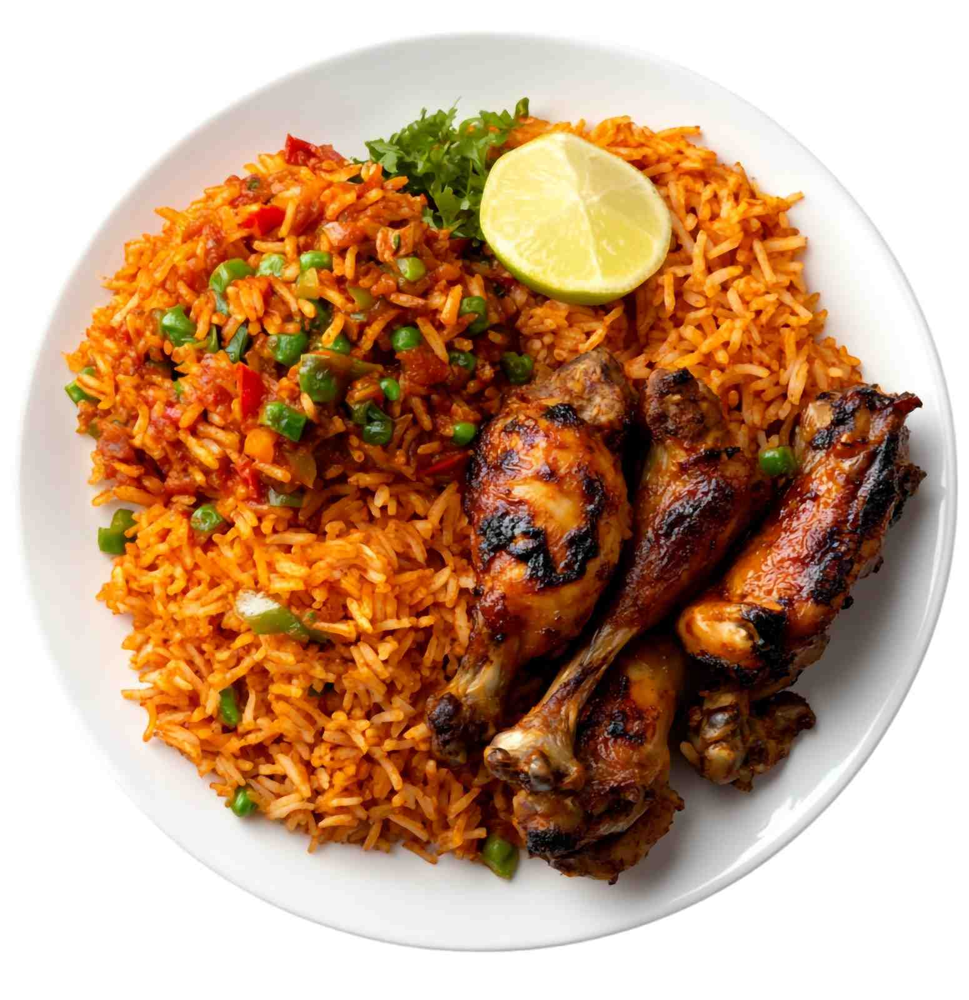
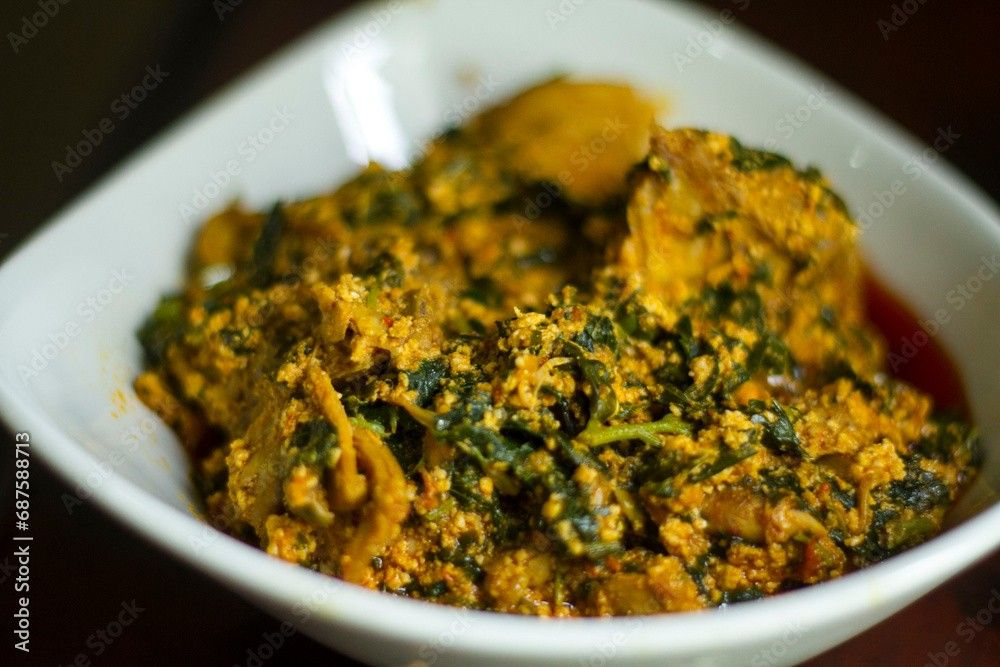

Traditional Lagos Recipes
Learn to prepare classic dishes from Lagos. Each recipe includes ingredients and step-by-step directions.
Jollof Rice
Ingredients
- 3 cups long-grain parboiled rice
- 4 medium tomatoes (blended)
- 2 red bell peppers
- 1 onion (sliced)
- 2 tbsp tomato paste
- 2 cups chicken stock
- Seasonings (thyme, curry powder, bay leaf, salt, pepper)
- Vegetable oil
Directions
- Blend tomatoes, peppers, and onion into a smooth paste.
- Heat oil, fry sliced onions, then stir in tomato paste and blended mixture. Cook until reduced.
- Add chicken stock, seasonings, and washed rice. Stir and cover tightly.
- Steam on low heat until rice is soft and fully cooked.
- Serve hot with fried plantain or grilled chicken.
Egusi Soup
Ingredients
- 2 cups ground melon seeds (Egusi)
- 500g assorted meats (beef, goat, tripe)
- 1 cup stockfish and dried fish
- 2 tbsp ground crayfish
- 2 cups spinach or ugu leaves
- 1 onion
- Palm oil
- Seasonings (salt, pepper, bouillon cubes)
Directions
- Cook meats and stockfish with onion and seasoning until tender.
- Heat palm oil, add ground Egusi, and fry lightly.
- Pour in meat stock and stir until Egusi thickens.
- Add meats, crayfish, and dried fish. Simmer for 10 minutes.
- Stir in chopped spinach or ugu leaves and cook briefly.
- Serve hot with pounded yam, eba, or fufu.